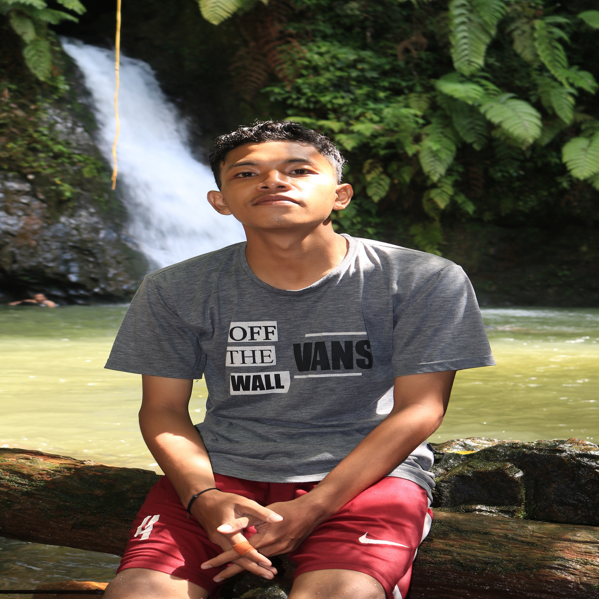
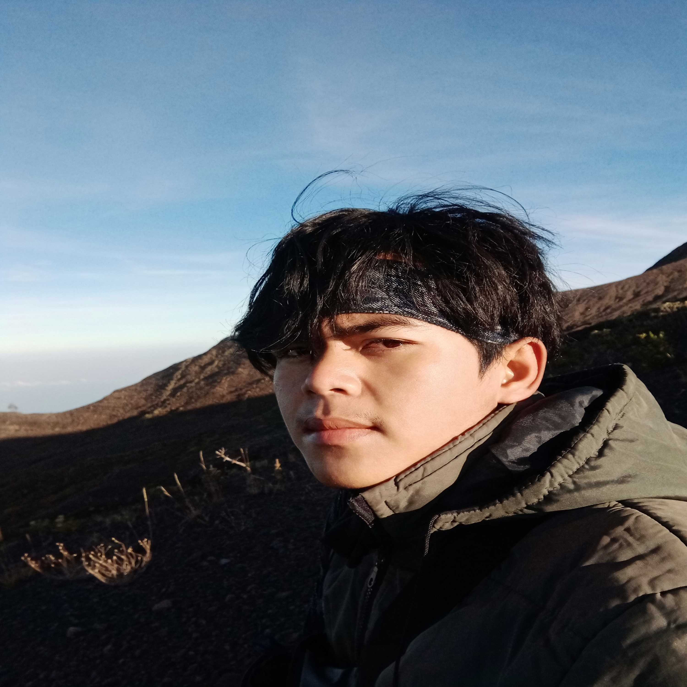
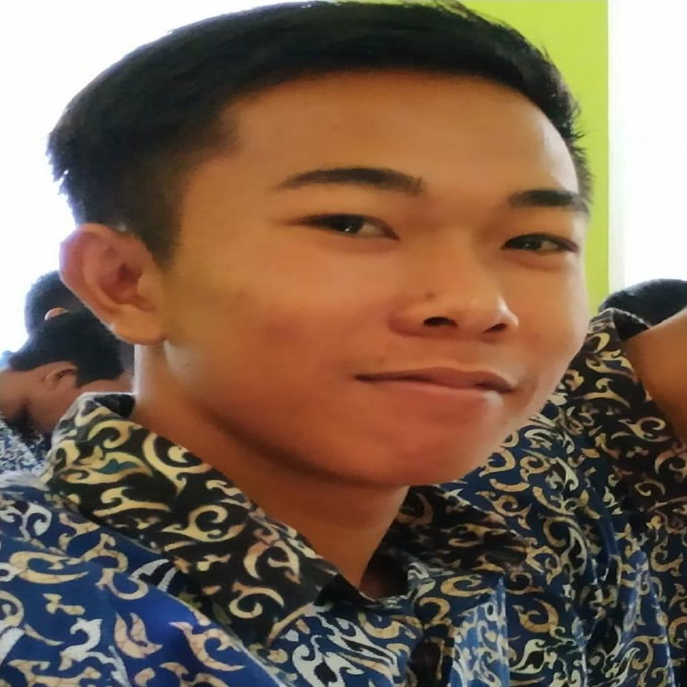
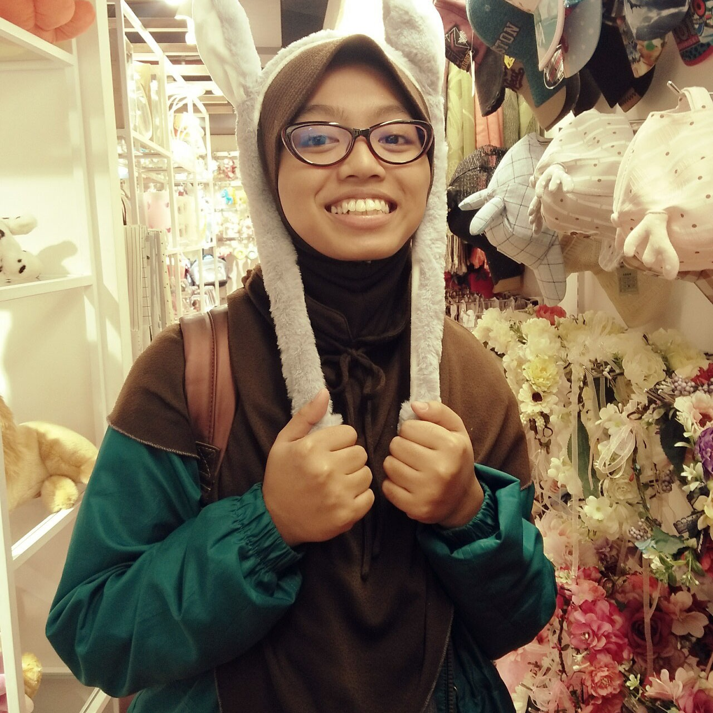
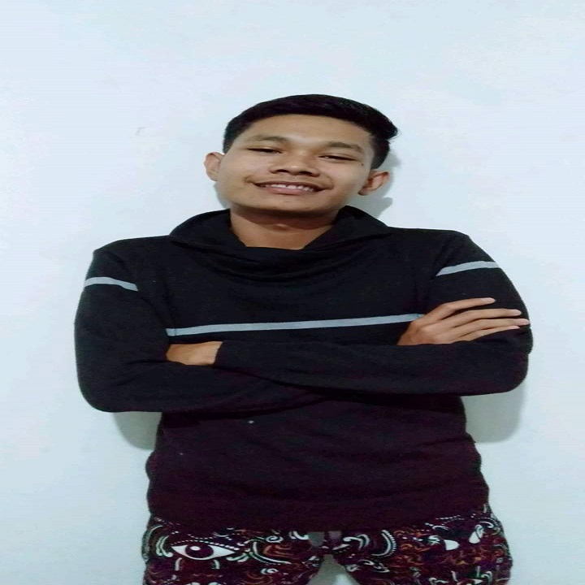
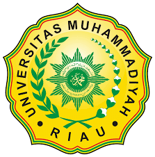
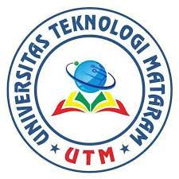
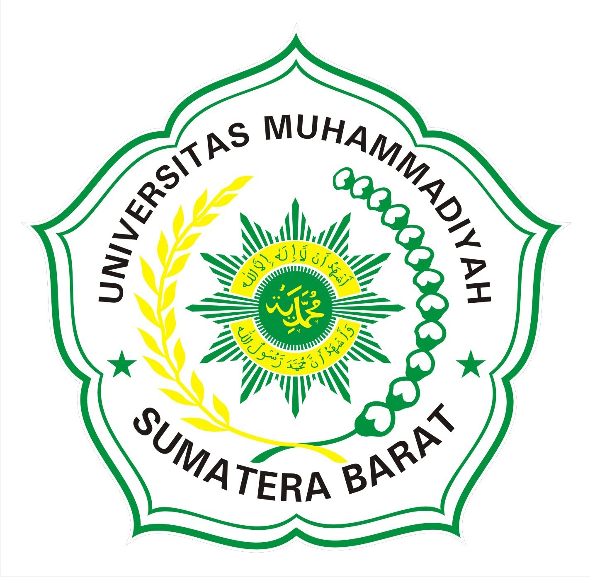

Apakah Kamu Tau ?
Deskripsi
Kelompok 10 A terbentuk dari Program Kampus Merdeka Progate. Terdiri dari mahasiswa dan mahasiswi berbagai universitas dan daerah. Pada proyek kali ini merupakan proyek membuat halaman website sederhana sebagai hasil belajar dari HTML dan CSS

Profil Tim Kami
Profil
Berikut adalah profil dari kelompok 10A

M ZAKKIY AL KHAIRI
Pekanbaru, 29 Desember 1999. Universitas Muhammadiyah Riau SISTEM INFORMASI

M ALI AKBAR
Lombok Timur, 16 april 1999. Universitas Teknologi Mataram TEKNIK INFORMATIKA

M BUDIAMIN
Lombok Utara 21 juni 1999. Universitas Teknologi Mataram TEKNIK INFORMATIKA

MEIDY ELSHIERADJ MASYITHO
Mojokerto, 29 Mei 2000. Institut Teknologi Sepuluh Nopember TEKNIK FISIKA

M HUSNUL HOLQI PSB
Pasaman, 23 juli 1999. Universitas Muhammadiyah Sumatra Barat TEKNIK ELEKTRO
Universitas Kami
Universitas
Berikut adalah Universitas dari masing - masing anggota kelompok kami




© 2021. Kelompok 10A All Rights Reserved.